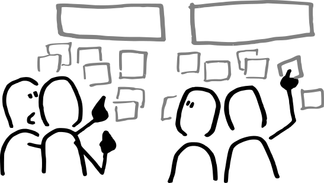

Structures impliquées¶

Cette page rassemble les structures qui composent le collectif fondateur de l'Upop' Bar. Elles n'arrivent pas toutes au même titre, ne portent pas le même rôle, mais ont décidé ensemble de monter ce projet. Elles s'assemblent autour d'une intuition partagée, et chacune apporte ce qu'elle sait faire de mieux. Ce qui les relie, c'est un certain goût de l'éducation populaire, des communs, et de la pratique avant la théorie.
Une façon simple de lire l'assemblage : il y a celles qui portent l'intuition (Code Commun, La Méandre, l'Université Populaire de Villeurbanne) et celles qui rendent le projet possible matériellement et politiquement (Intermède, qui pilote La Filature ; la Mairie de Villeurbanne).
Chaque structure dispose d'une page dédiée dans cette arborescence, qui présente brièvement la structure, son rôle pressenti dans le collectif, et ce qu'elle pourrait faire en pratique dans le lieu. Ce qui suit est une carte d'entrée.
L'engagement officiel¶
Trois structures se sont engagées officiellement pour la durée de l'occupation. Chacune tient un rôle précis dans le fonctionnement du lieu :
L'Université Populaire de Villeurbanne assure au minimum trois jours d'ouverture par semaine.
La Méandre anime des ateliers et gère les commissions d'approvisionnement.
Code Commun ouvre les jours nécessaires pour garantir un plancher de quatre jours d'ouverture par semaine (du mercredi au samedi soir). La coopérative assure aussi la régie générale du site, l'outillage technique et l'animation du « commun d'espace ».
Les porteurs de l'intuition¶
Code Commun¶
Coopérative SCIC qui fabrique des communs numériques pour les tiers-lieux et les associations. Elle peut porter administrativement et financièrement le projet, mobiliser environ 10 000 € de fonds propres pour l'amorcer, et apporter sa compétence festivalière et technique pour la programmation culturelle. C'est aussi par elle que le projet s'inscrit dans le réseau national des tiers-lieux.
En savoir plus sur Code Commun
La Méandre¶
La Méandre est une association d'éducation populaire membre du réseau des Crefad. Elle réalise des interventions auprès de structures (associations, collectifs, entreprises, collectivités locales…), des diagnostics institutionnels, propose des formations et accueille des groupes de recherche autour de thématiques liées à ses activités.
Exemple d'événements prévus :
-
en octobre : Accueil de François Beaune pour son ouvrage ''de la banalité du bien'' - présentation du livre suivit d'une discussion autour de l'éducation populaire et du fait associatif
-
en janvier : accueil de la Maison d'édition ''Cause perdue'' avec deux auteurs publiés : Bénédicte Thiébaut & Gwenaël David
L'Université Populaire de Villeurbanne¶
Démarche d'éducation populaire portée par des habitant·es, des associations, des chercheurs et chercheuses, et la ville. Sa devise : "Comprendre le monde, agir ensemble". L'Upop' donne au projet son sens politique : un café associatif comme un des points d'ancrage d'une circulation des savoirs qui le dépasse largement. Sans l'Upop', ce projet ne serait qu'un simple café associatif de plus.
En savoir plus sur l'Université Populaire de Villeurbanne
Les conditions de possibilité¶
Intermède et La Filature¶
Coopérative d'urbanisme transitoire, qui pilote La Filature depuis 2023. Elle accueillerait l'Upop' Bar dans le cadre du tiers-lieu existant et choisirait parmi les structures candidates à la reprise de la cantine, de la programmation et du pavillon à partir d'août 2026. Au-delà du rôle d'hôte, son expertise (urbanisme transitoire, prospective des modes de vie) peut nourrir l'expérience.
En savoir plus sur Intermède et La Filature
La Mairie de Villeurbanne¶
Soutien financier (le coup de pouce d'environ 3 000 € évoqué) et caution politique. La Mairie est déjà partenaire fondatrice de l'Upop', et plusieurs des participant·es du Vortex viennent d'équipements municipaux (Le Rize, l'Archipel, la Maison de quartier des Brosses...). La Mairie est déjà dans la salle, même quand elle n'y est pas formellement assise.